Sobre o projeto
Este site foi desenvolvido para coletar respostas sobre projetos sociais, guardar essas informações em banco de dados e mostrar os resultados em uma dashboard com indicadores simples.
A ideia é usar a tecnologia para entender melhor a realidade social das pessoas e mostrar como dados podem ajudar na visualização de necessidades e participação em ações sociais.
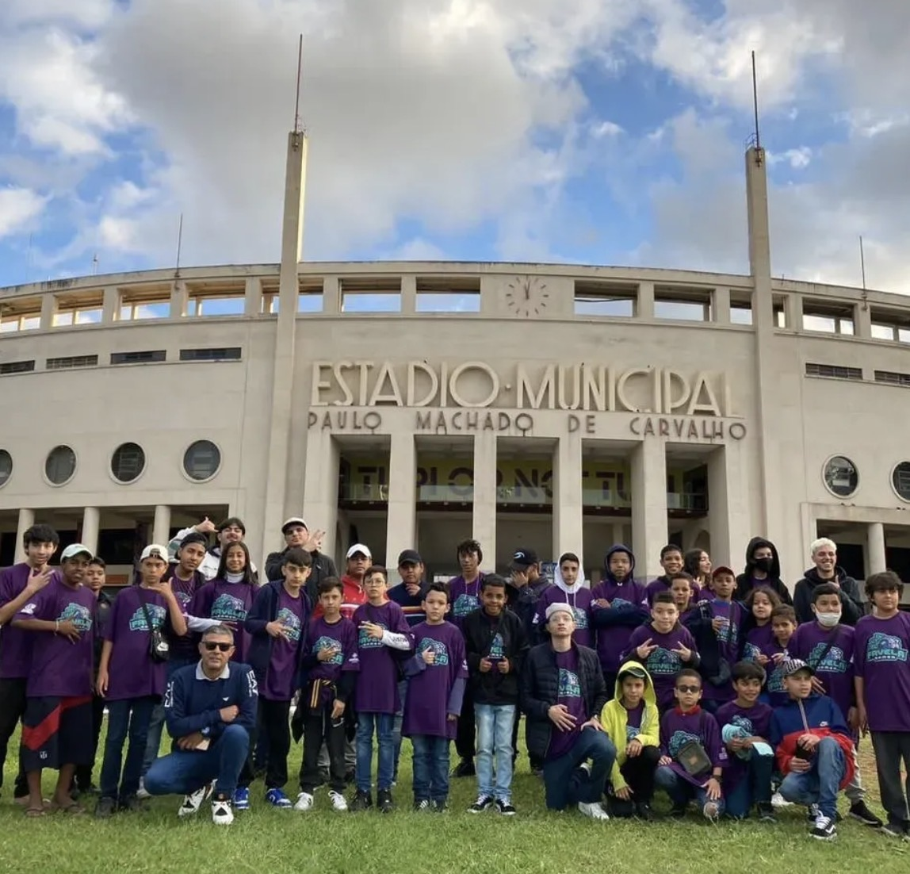
Minha relação com o tema
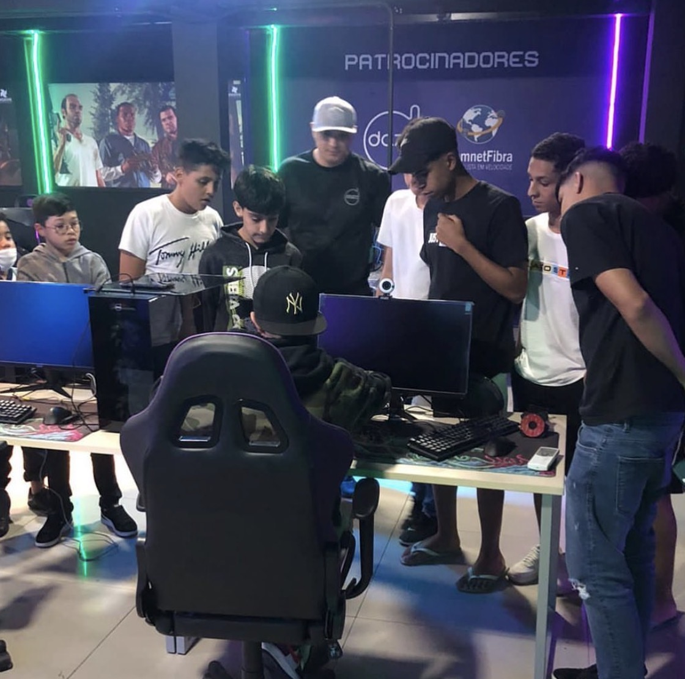
Minha relação com projetos sociais veio através de ações comunitárias, projetos com crianças e jovens, inclusão digital e eventos ligados a games, esporte e tecnologia.
Em alguns desses projetos, participei de atividades com jovens de diferentes realidades e pude perceber como tecnologia, esporte e eventos podem criar oportunidades e aproximar pessoas.
Por isso escolhi esse tema: ele faz parte da minha história e representa valores como empatia, liderança, inclusão e vontade de transformar ideias em algo útil.
Um pouco da minha trajetória
Antes de pensar no sistema, eu já tinha vivido experiências em projetos sociais. Participei de ações com crianças, projetos ligados ao universo gamer, eventos no Pacaembu e iniciativas com apoio de lideranças e pessoas envolvidas com esporte, tecnologia e comunidade.
Essa vivência foi o que me fez escolher um tema pessoal para o Projeto Individual. Eu não queria fazer apenas um site aleatório, mas sim algo relacionado com uma parte real da minha história.
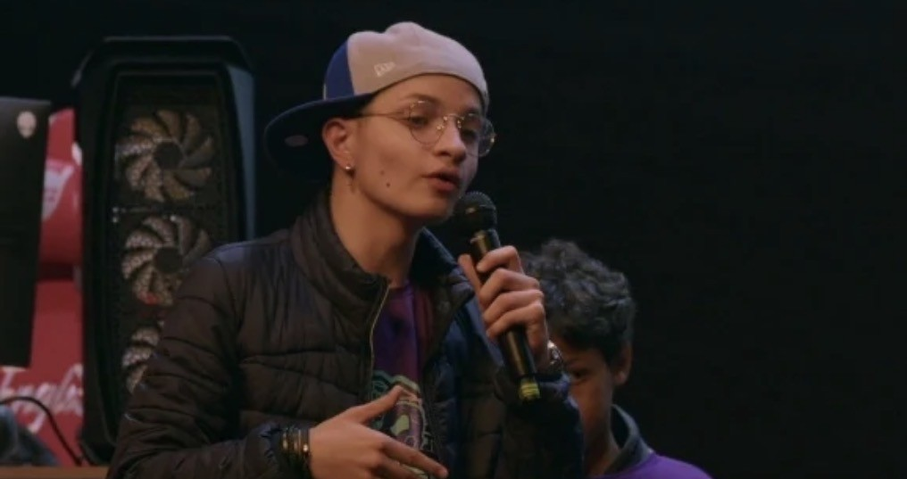
Registro de participação e fala em evento ligado a projeto social e tecnologia.
O que o sistema faz
Formulário
Coleta respostas sobre participação e percepção social.
Banco de dados
Armazena usuários, respostas e projetos sociais.
Dashboard
Mostra indicadores, porcentagens e gráficos simples.
API Node
Faz a conexão entre o site e o banco MySQL.
Valores representados
O projeto representa empatia, inclusão, responsabilidade social e uso da tecnologia para resolver problemas reais. Também representa minha vivência em projetos sociais e minha vontade de aplicar o que aprendi no semestre em algo que tem significado pessoal.
Galeria de experiências
Projeto com jovens no Pacaembu.

Apresentação em evento social e tecnológico.
Atividades de inclusão digital com jovens.
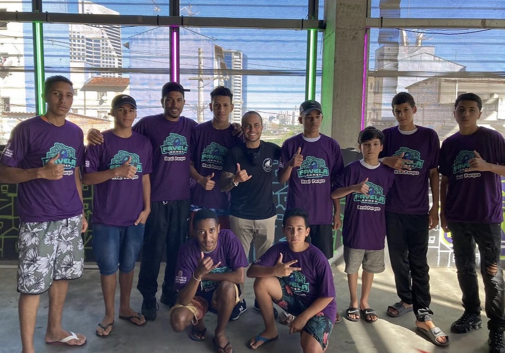
Equipe e participantes de projeto gamer social.
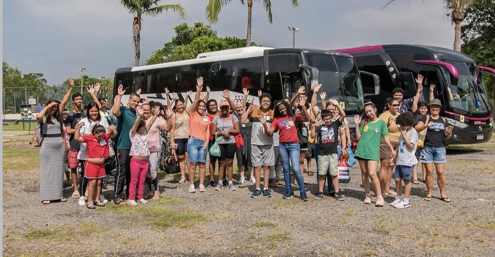
Passeios e ações organizadas para crianças.
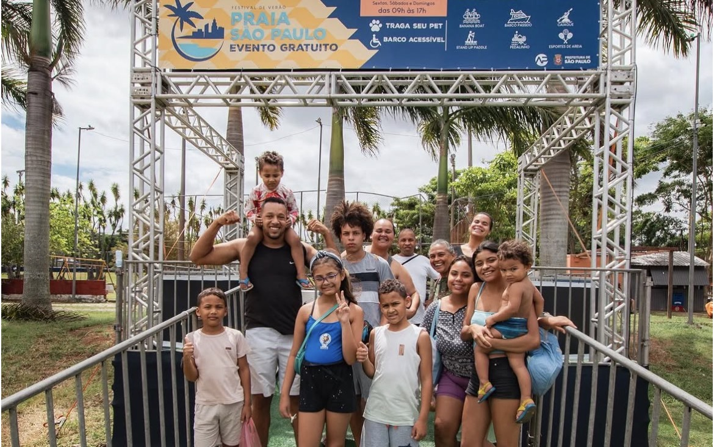
Atividades comunitárias e lazer com famílias.
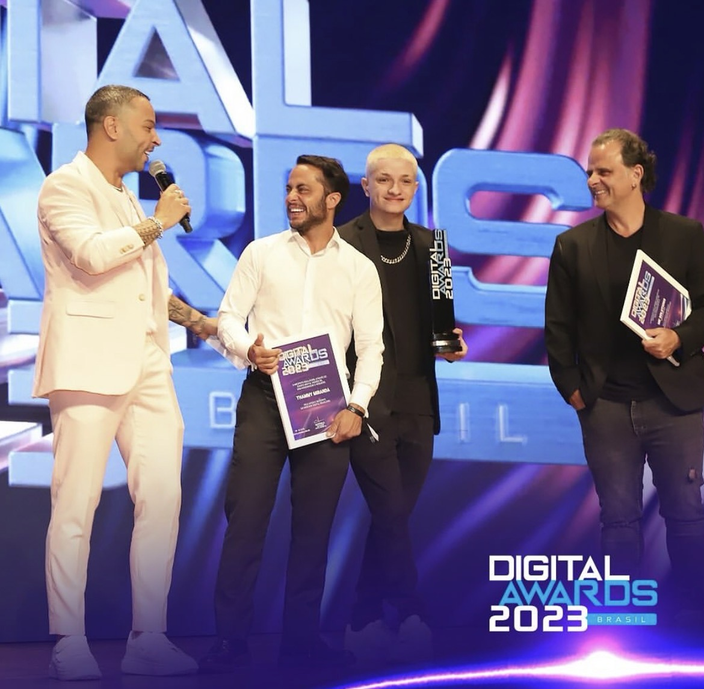
Reconhecimento em evento de tecnologia.
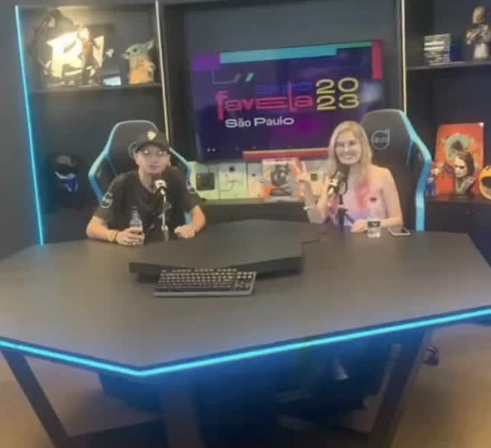
Divulgação de projetos e experiências em mídia.
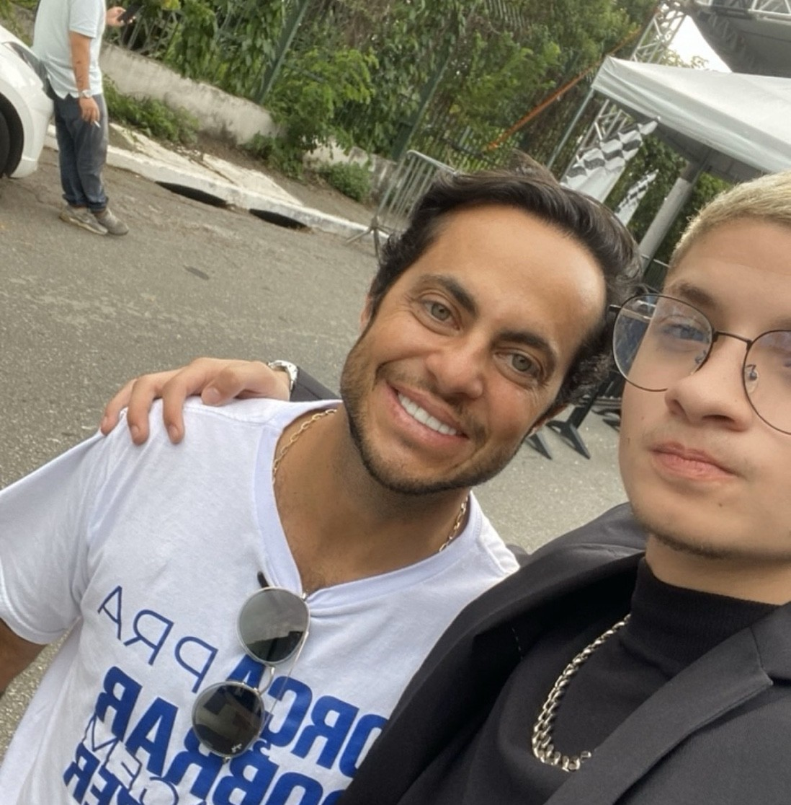
Contato com lideranças e apoiadores de projetos.
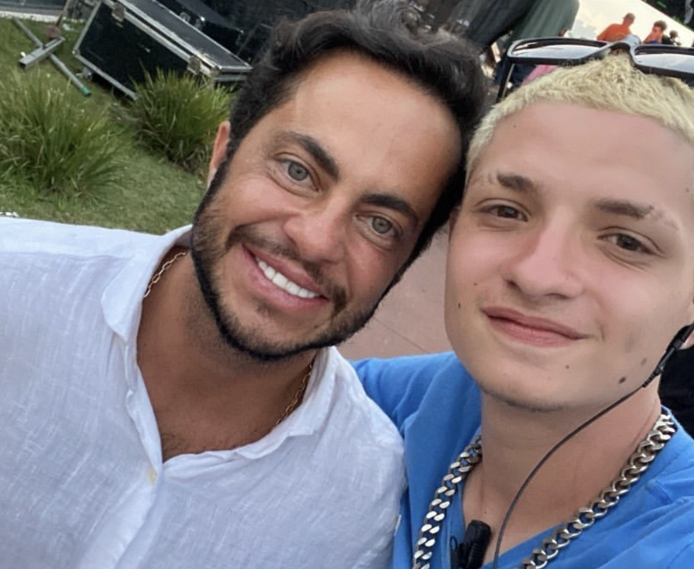
Registro com apoiadores de iniciativas sociais.
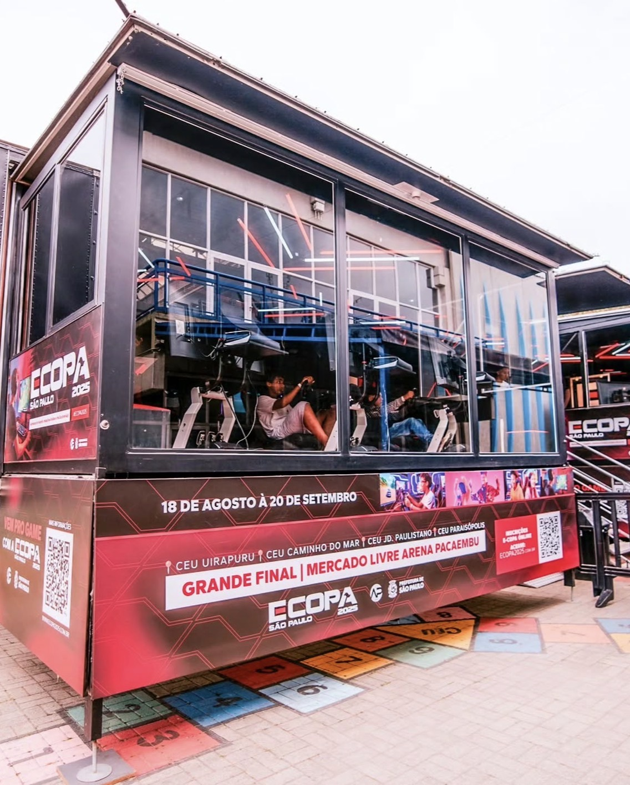
Evento com estrutura voltada para inclusão.
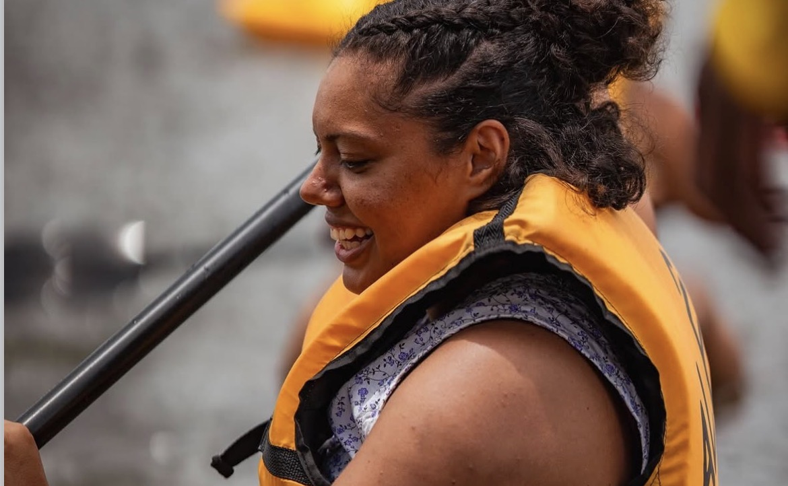
Atividades de lazer e acessibilidade.